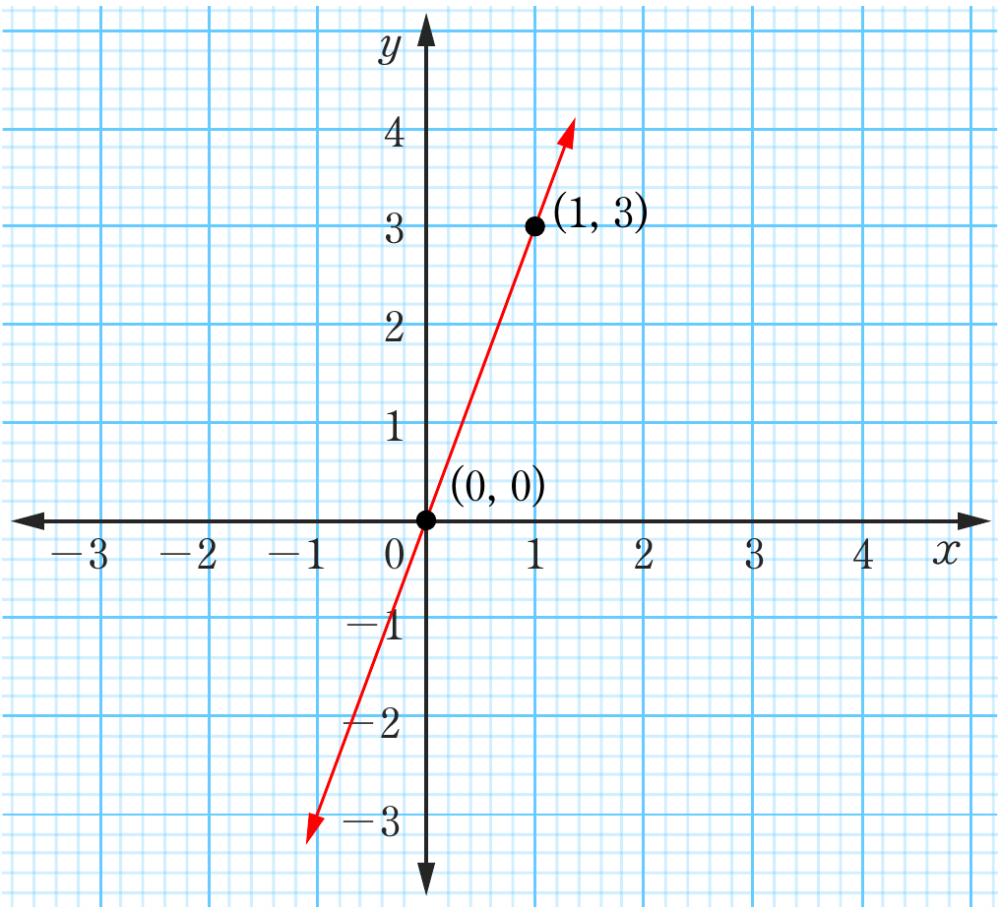
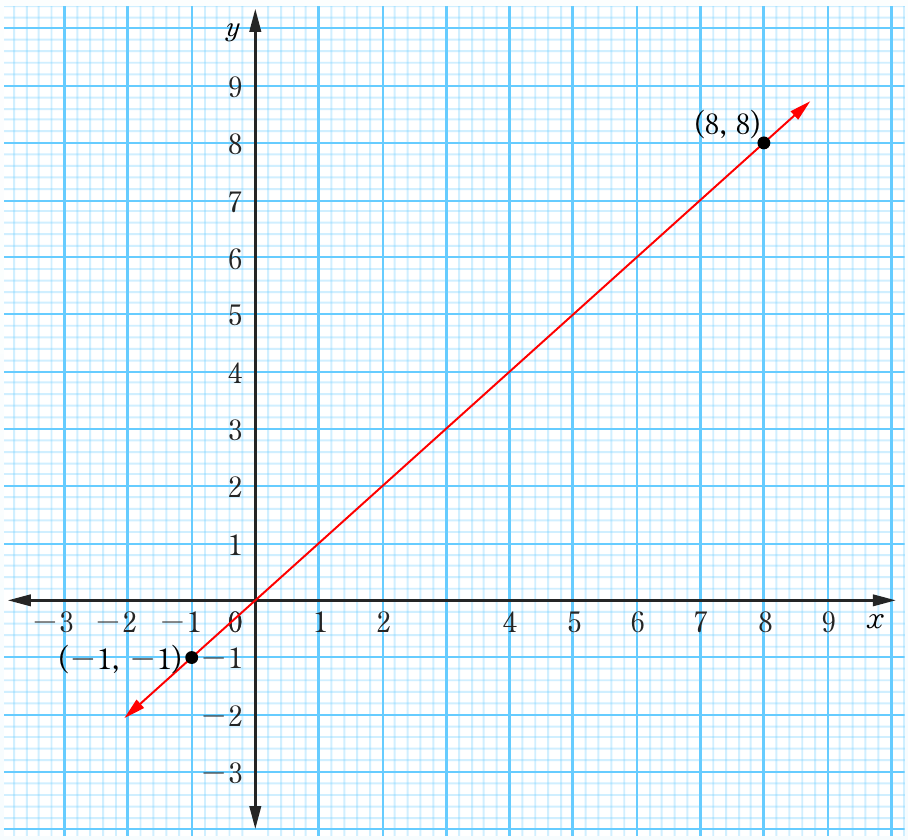

(e) , -intercept
(f) , -intercept
3. (a)

(b)

Coordinate graph showing a straight line through the points (0, 0) and (1, 3), rising steeply from left to right; slope m = 3.Coordinate graph showing a straight line through the points (-1, -1) and (8, 8), rising evenly from left to right; slope m = 1.(0, 0)(1, 3)(-1, -1)(8, 8)